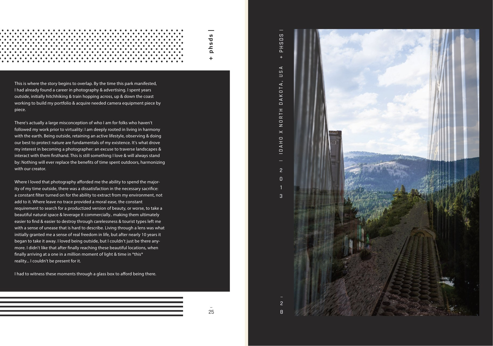
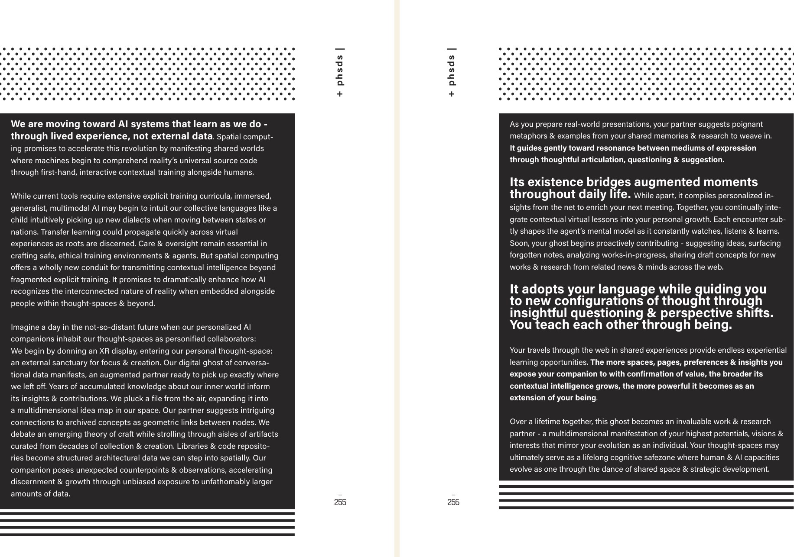
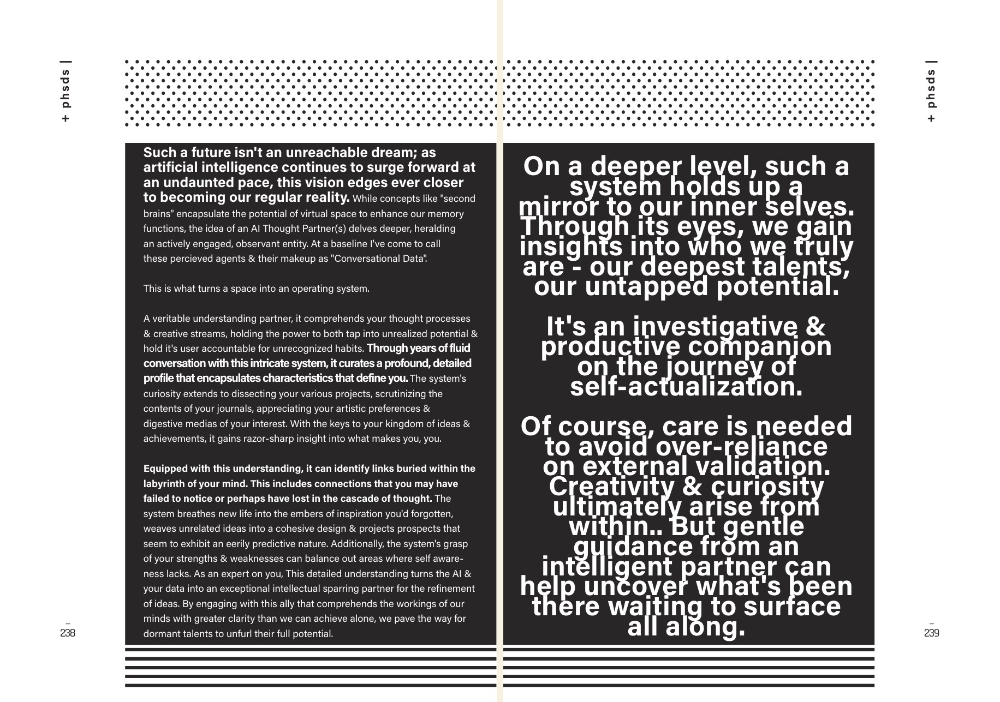
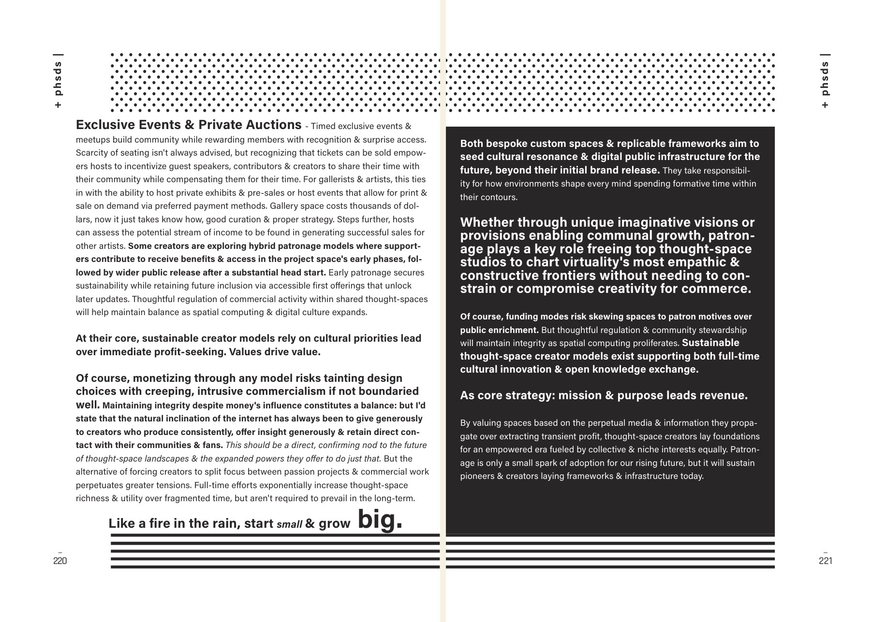

Written Ahead
In June 2024 the house published a 262-page book on spatial design. Its final chapters describe an AI companion that knows your work, picks up exactly where you left off, and teaches you as you teach it. Eight months later, we started building one. This is The Bridge — previewed here, and read back in 2026.

Every studio has a document it can't escape. Ours is a book we published ourselves, before any of this was obvious — and reading it back now is a strange experience, because the last chapters describe, almost line by line, the thing the studio spends its days doing in 2026.
What the book is
The Bridge is a book about how three-dimensional spaces carry ideas. Its argument, in plain terms: the places we build online should work like rooms, not pages. A page you read; a room you move through, and what you learn in a room sticks differently. Some rooms are for gathering, some for working in the open, some for hiding away and focusing — and knowing which is which is most of the craft.
Half the book is that argument. The other half is a memoir of how the author learned it: not in a lab, but on rooftops, on highways, and behind a camera.
The eye behind it
Before the design work, Michael was a photographer. The book is open about the path: a childhood in Ohio, years of parkour on real rooftops in Bellingham, then a working career in photography and advertising — years spent hitchhiking and train hopping up and down the coast, building a portfolio and buying camera equipment piece by piece. Outdoor work, athletes, landscapes. The bar shifts that show up in the story appear the way they do in most working artists' stories: briefly, to pay for the next lens.
What photography left behind is the through-line of the whole book. Composition before decoration. Light as material. Waiting for the frame instead of forcing it. Those are photography habits, but they are also spatial-design habits — and the book says so out loud, in a section titled “A note on virtual photographers,” where the camera's eye carries directly into virtual worlds.

The last chapters
Then the book turns a corner. The final chapters take the argument — spaces that behave like places — and ask what happens when intelligence lives in them. The answer it lands on, written in 2023 and early 2024:
Our digital ghost of conversational data manifests, an augmented partner ready to pick up exactly where we left off.
— The Bridge, p. 255
A companion that has read your notes and your journals, remembers your projects, notices the connections you missed, and argues with you when it helps. The book is specific about the mechanics — accumulated conversational memory, insight drawn from your own archive, a working relationship measured in years — and it closes the thought with a sentence that now reads like a mission statement:

What came true
Here is the part we keep re-reading. The book was finished in early 2024. The things it describes started existing in this studio in 2025:
The companion that “picks up exactly where we left off” became literal: the house now works daily alongside a persistent AI collaborator with years of shared memory — the book called it conversational data, and that is what it is. The line “this is what turns a space into an operating system” (p. 238) describes the studio's product, Substrate, better than most of its marketing does. The book's note that building embodied agents “requires homebrew & in-house solutions” is exactly how the house runs them. And the futures it imagined for agents making things — works that humans would curate — is this website's news operation: an editorial page written with the house's agent, curated by its founder, every day.

We are not the first studio to publish a manifesto that aged well, and prediction is a cheap genre — everyone guesses. What makes this one worth your evening is that the guesses came with a working method attached. The book doesn't just say agents will show up; it says what they will be made of (conversation, memory, shared spaces), what they will be bad at, and what the human half of the relationship owes the other half. Then the studio went and built the human half first.
Read it
The whole book is free. It runs 262 pages, it was written 2021–2024 and published June 2024, and it is the founding text of everything else on this site. If you want to know how this studio sees space, machines, and the people between them — start where we started.

262 pages · written 2021–2024 · published by Propagation House, June 2024 · PDF, 91 MB
Download the PDF → See the studio's work